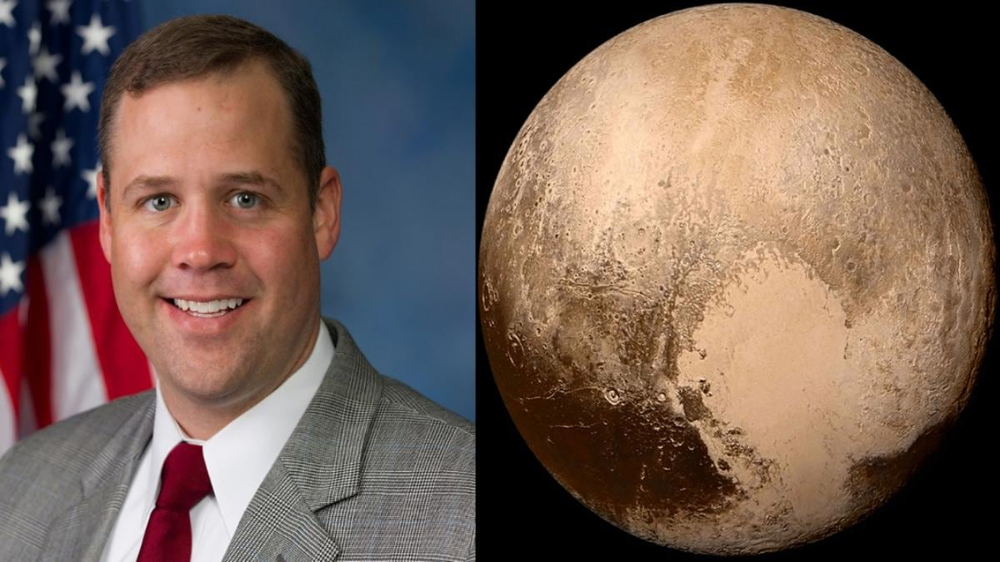

PLUTO

Pluto
In the 1840s, Urbain Le Verrier used Newtonian mechanics to predict the position of the then-undiscovered planet Neptune after analyzing perturbations in the orbit of Uranus.[15] Subsequent observations of Neptune in the late 19th century led astronomers to speculate that Uranus's orbit was being disturbed by another planet besides Neptune.
In 1906, Percival Lowell—a wealthy Bostonian who had founded Lowell Observatory in Flagstaff, Arizona, in 1894—started an extensive project in search of a possible ninth planet, which he termed "Planet X". By 1909, Lowell and William H. Pickering had suggested several possible celestial coordinates for such a planet. Lowell and his observatory conducted his search until his death in 1916, but to no avail. Unknown to Lowell, his surveys had captured two faint images of Pluto on March 19 and April 7, 1915, but they were not recognized for what they were. There are fourteen other known precovery observations, with the earliest made by the Yerkes Observatory on August 20, 1909.
Percival's widow, Constance Lowell, entered into a ten-year legal battle with the Lowell Observatory over her husband's legacy, and the search for Planet X did not resume until 1929. Vesto Melvin Slipher, the observatory director, gave the job of locating Planet X to 23-year-old Clyde Tombaugh, who had just arrived at the observatory after Slipher had been impressed by a sample of his astronomical drawings.
WHY IS PLUTO NOT CONSIDERED AS A PLANET?
In 2006 the International Astronomical Union (IAU) demoted the much-loved Pluto from its position as the ninth planet from the Sun to one of five “dwarf planets.” The IAU had likely not anticipated the widespread outrage that followed the change in the solar system’s lineup. When the announcement was made (and even over 10 years later), people around the world objected to the planet’s demotion on principle, saying that it altered tradition and history, rather than engaging with the scientific reasoning. So, what was the IAU’s reason for demoting Pluto when it did? Why is Pluto no longer a planet?
The main event of the 2006 General Assembly of the IAU, the proposal that would come to demote Pluto, was a defining moment for the rest of the solar system as well. Fiercely debated by the members of the union, the resolution that was passed officially defined the term planet. What was once a loose word used to describe a large object within the solar system was now specific: planets are celestial objects large enough to be made rounded by their gravitational orbit around the Sun and to have shooed away neighboring planetary objects and debris. Pluto is now classified as a dwarf planet because, while it is large enough to have become spherical, it is not big enough to exert its orbital dominance and clear the neighborhood surrounding its orbit.
Before the resolution in 2006, the term planet had no working definition and was based on classification from before some of the major modern discoveries within the universe that were made possible by advances in technology. To many citizens of Earth, the demotion of Pluto felt like a break from tradition, and it was precisely that—a positive step forward into a new light, new knowledge, and changing perspectives of the universe.

Interesting facts about Pluto
1. Pluto is named after the Roman god of the underworld.
2. Pluto was reclassified from a planet to a dwarf planet in 2006.
3. Pluto was discovered on February 18th, 1930 by the Lowell Observatory.
4. Pluto has five known moons.
5. Pluto is the largest dwarf planet.
6. Pluto is one third water.
7. Pluto has been visited by one spacecraft.
8. Pluto sometiomes has an atmosphere.